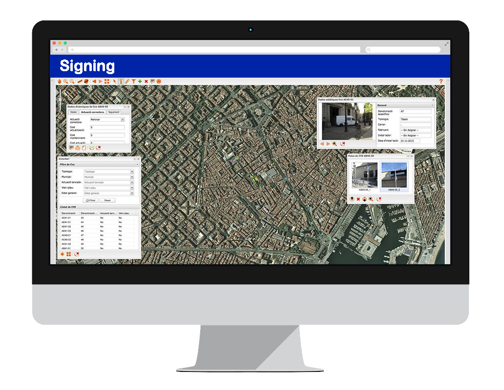

Trabajamos para desarrollar y promocionar destinos turísticos inteligentes
Destinos Turísticos
Aumenta el número de turistas que visitan tu territorio y mejora su acogida en el destino mediante la integración de sistemas avanzados offline/físicos (señalización) con sistemas on-line/digitales, utilizando las mejores tecnologías.
Servicios Turísticos
Potencia tu canal de ventas on-line ofreciendo información, productos y servicios personalizados a tus clientes a través de la plataforma Inventrip. Promociona tu imagen de marca con la difusión por las redes sociales de vídeos turísticos realizados con drones.
Inventar Viajes
Los turistas podrán conocer gratuitamente con la plataforma Inventrip los encantos de los destinos y las propuestas de servicios y actividades turísticos. Podrán fácilmente planificar su viaje, consultarlo durante su estancia y compartirlo con amigos y familiares.
¿Quieres descubrir un caso de éxito?

DronTrip
Utiliza vuelos turísticos con Drones para viralizar por las redes sociales la promoción de destinos y servicios turísticos.

NFC
Entrega a tus clientes tarjetas NFC (contactless) para personalizar su experiencia turística en el destino.

Señalización
Implanta un sistema de señalización para facilitar el guiado a los turistas y mejorar la calidad de imagen del destino.
QR
Comparte un viaje turístico a través de códigos QR.
Beacon
Despliega la nueva tecnología beacons para dar información contextualizada al turista y ofrecerle productos y servicios personalizados en su teléfono móvil.
Inventrip

Inventar viajes: esa es la visión
Te proporcionamos una plataforma tecnológica con la que tus viajeros podrán crear su plan de viaje (por días, ciudades, temas, etc.) y navegando por el mapa podrán ir añadiendo los recursos que quieran visitar y servicios que deseen contratar.
Signing
Signing es un servicio web especializado para la planificación y gestión de la señalización territorial y urbana utilizado por más de 30 administraciones públicas. Fue desarrollado en 2009 en el marco de un Plan Avanza de I+D del Ministerio de Industria, Turismo y Comercio.
Staff
|
ESPAÑA Madrid & Barcelona |
FRANCIA Annecy |
CROACIA Zagreb |
AUSTRIA Innsbruck |
SUIZA Lausanne |
Copyright © 2015 SISMOTUR SL.